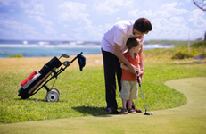
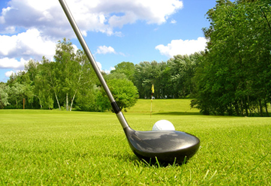

3 Simple Steps to Get Your Kid into Golf
In This Article: Tip 1: Choose The Right Time Tip 2: Choose The Right Program Tip 3: Choose The Right Equipment
Tip 1: Choose The Right Time
Most junior golf programs start at age five, however most kids take their first lessons somewhere between eight and twelve years old.
So what's the right time to start lessons? There are advantages to starting a child young. Establishing good swing habits and game etiquette early on will serve them well later. However, pushing a child to start lessons before they are ready will only lead to frustration on their part (and probably yours, too). Ask yourself these questions to determine whether your child is ready for golf lessons.
- Does your child have the hand-eye coordination? Here's a simple indicator from the pros: if your child can catch a baseball, their hand-eye coordination is sufficiently developed for golf.
- Does your child have the attention span? Golf is not a fast, exciting sport compared to other popular games. On average, a child's attention span is three to five minutes times their age. So, an average four year old would have about a 12-minute attention span. If your child has trouble in this area, you might want to wait until they are older.
- Does your child have the interest? For your child to view golf as a fun sport and not an obligation, they have has to be personally interested in playing. Above all, make sure they are the one driving the timing, not you.
If you're intent on raising a golfer, but your kids aren't quite ready, you can try to pique their interest by letting them watch you play or hit golf balls at the driving range. Get some toy plastic clubs and let them swing at Nerf balls or wiffle balls. When they're a bit older, pick up some junior sized clubs and show them how to swing. If you have access to a field or open area, get a bucket of used balls and let your kids hit them until they're tired out. Don't push them beyond their attention span, and remember to keep it fun!
Tip 2: Choose The Right Program
Teaching kids to play golf, especially young kids, should be all about fun. The fundamentals of the game will quickly become irrelevant if your child isn't having a good time. Look for the following when selecting a program.
Variety of activities:
Skilled instructors will be prepared to work with, rather than against, kids' short attention spans. They'll frequently switch up activities so students don't have a chance to get bored.
Student-instructor ratio:
Kids benefit from lots of one-on-one time with their golf instructor. Look for a program with a student-instructor ratio of no more than 8:1.
The big picture:
Golf is more than just swings. In addition to the physical skills development, a good golf program should also teach children about the game itself, including the rules, course management and game etiquette.
Tip 3: Choose The Right Equipment
The basic equipment your child will need for golf includes: clubs, shoes and a glove. Most camps and lessons include balls, so you shouldn’t have to bring your own. Your child's program or instructor can provide specific golf equipment & accessories recommendations, but use the following for general guidance.
Clubs:
Back in the day, parents would just cut down a set of their own golf clubs, hand them to their child, and let them swing away, but adult clubs are not the best choice for kids. They're too stiff, too heavy and not proportioned correctly for smaller players.
Choose golf clubs based on your child's height and strength. A taller, stronger child may be able to handle a longer and heavier club, while lighter clubs are more appropriate for smaller children. Your child should try swinging a few at the store (preferably outside —ask permission first) to see what works for them.
How many clubs should you buy? For beginners, a putter, a wood and a 5-7 iron should be sufficient. However, ask your instructor to be certain.
Shoes:
Most junior golf programs do not require golf shoes, so your child can wear any well-fitting, comfortable athletic shoe that provides good traction and support. If your child seems particularly serious about the game, you might want to invest in a pair of golf shoes. If you can afford it, leather will be the most durable material. You won't find golf shoes with metal spikes anymore; they've been widely banned because of the damage they do to the course. Instead, look for shoes with molded plastic cleats that help provide good grip during your child's swing.
Related Categories